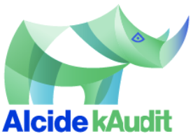
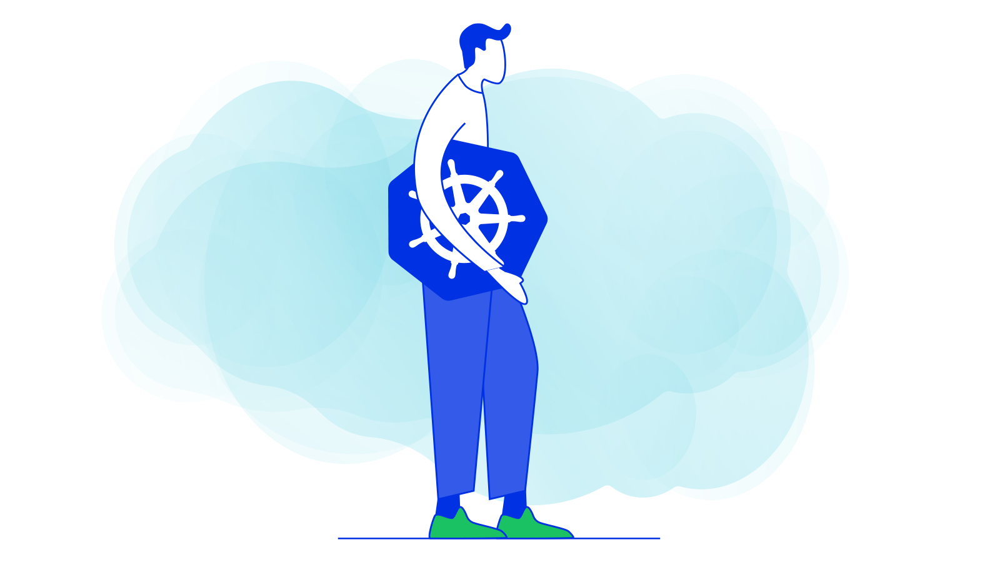
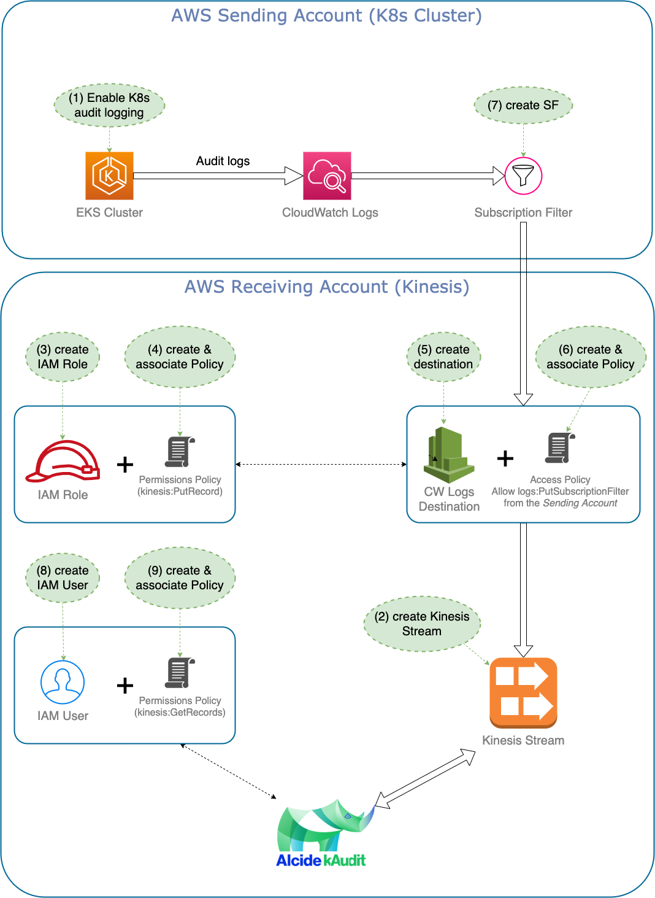
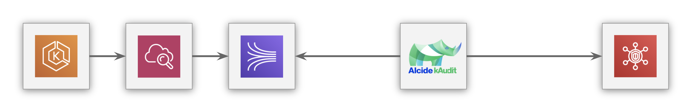
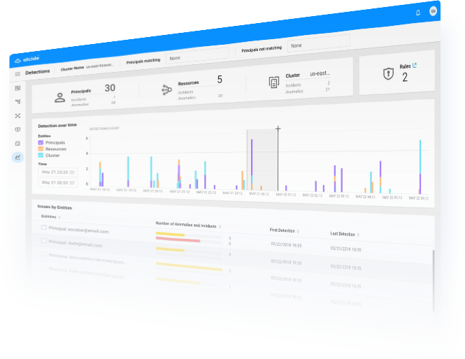
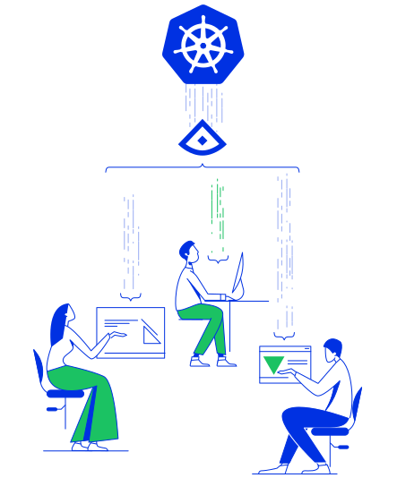

Alcide kAudit is designed to automatically analyze Kubernetes audit logs to detect anomalous behavior of users and service accounts. kAudit automatically detects security-related issues related to Kubernetes' administrative actions, especially anomalous behavior that can only be detected from observing extended context over multiple activities. In addition, kAudit supports Audit rules to detect violations of organization compliance policies regarding Kubernetes usage. Incident forensics, along with audit statistics, are presented in graphical and tabular summaries for easy investigation and analysis.
kAudit can process log from a wide rage of Kubernetes clusters services such as AKS, GKE, EKS as well ass native support, for more details check Alcide documentation.
In this tutorial we will learn how to install kAudit in your environment and it's infrastructure on AWS EKS.
We will deploy a single kAudit analyzing the audit log of a single k8s cluster

For this tutorial you will need an EKS cluster, with sufficient priviliges to install resources.

Alcide kAudit consumes EKS audit log stream. In the following steps we will configure the required infrastructure components to stream Kubernetes audit logs from your EKS cluster to Alcide kAudit.

Let's begin by opening your terminal ...
export KINESIS_AWS_PROFILE=<AWS Account profile name (from ~/.aws/config)>
export KINESIS_AWS_REGION=<AWS region>
export EKS_AWS_PROFILE=<AWS Account profile name (from ~/.aws/config)>
export EKS_AWS_REGION=<AWS region>
export CLUSTER_NAME=<EKS cluster name>
export EKS_ACCOUNT_ID=<EKS AWS account ID>
For example:
export KINESIS_AWS_PROFILE=auditlogs-account
export KINESIS_AWS_REGION=eu-west-1
export EKS_AWS_PROFILE=eks_account
export EKS_AWS_REGION=eu-west-2
export CLUSTER_NAME=myCluster
export EKS_ACCOUNT_ID=123456789012
cd /tmp
git clone https://github.com/alcideio/kaudit.git
cd kaudit
aws cloudformation --profile=$KINESIS_AWS_PROFILE --region=$KINESIS_AWS_REGION create-stack --stack-name $CLUSTER_NAME-logs \
--template-body file://deploy/pre-install/aws/cloudformation/logsAccount.json \
--capabilities CAPABILITY_IAM \
--parameters ParameterKey="SourceAccount",ParameterValue="$EKS_ACCOUNT_ID" \
ParameterKey="ApplicationComponent",ParameterValue="audit-analyzer"
echo It may take a few minutes...
aws cloudformation --profile=$KINESIS_AWS_PROFILE --region=$KINESIS_AWS_REGION wait stack-create-complete --stack-name $CLUSTER_NAME-logs
export Logs_Destination_ARN=$(aws cloudformation --profile=$KINESIS_AWS_PROFILE --region=$KINESIS_AWS_REGION describe-stacks --stack-name $CLUSTER_NAME-logs \
--query 'Stacks[].Outputs[?starts_with(OutputKey, `Destination`) == `true`][].[OutputValue]' --output text)
if [[ $Logs_Destination_ARN == "arn:aws:logs"* ]]; then; echo "We are ready, you can keep going..."; else echo "We can't get the Logs Destination ARN"; fi
aws eks --profile=$EKS_AWS_PROFILE --region=$EKS_AWS_REGION update-cluster-config --name $CLUSTER_NAME \
--logging '{"clusterLogging":[{"types":["audit"],"enabled":true}]}'
aws cloudformation --profile=$EKS_AWS_PROFILE --region=$EKS_AWS_REGION create-stack --stack-name $CLUSTER_NAME-eks \
--template-body file://deploy/pre-install/aws/cloudformation/eksAccount.json \
--parameters ParameterKey="DestinationARN",ParameterValue="$Logs_Destination_ARN" \
ParameterKey="EKSClusterName",ParameterValue="$CLUSTER_NAME"
aws cloudformation --profile=$EKS_AWS_PROFILE --region=$EKS_AWS_REGION wait stack-create-complete --stack-name $CLUSTER_NAME-eks

if [[ $(echo -n \
$(aws kinesis --profile=$KINESIS_AWS_PROFILE --region=$KINESIS_AWS_REGION get-records --shard-iterator \
$(aws kinesis --profile=$KINESIS_AWS_PROFILE --region=$KINESIS_AWS_REGION get-shard-iterator \
--shard-id shardId-000000000000 \
--shard-iterator-type TRIM_HORIZON \
--stream-name $CLUSTER_NAME-logs-Stream \
--query 'ShardIterator') \
--limit 1 --query 'Records[].[Data]' --output text) \
| base64 -d | zcat | grep messageType) ]]; then
echo "We are ready, you can continue :)"
else
echo "The logs still not received, please try again in a few moments..."
fi
In order to generate Alcide kAudit deployment manifest we will use Helm template
export AWS_AKI=$(aws cloudformation --profile=$KINESIS_AWS_PROFILE --region=$KINESIS_AWS_REGION describe-stacks \
--stack-name $CLUSTER_NAME-logs --query 'Stacks[].Outputs[?starts_with(OutputKey, `kAuditUserKeyID`) == `true`][].[OutputValue]' --output text)
export AWS_SAK=$(echo -n $(aws cloudformation --profile=$KINESIS_AWS_PROFILE --region=$KINESIS_AWS_REGION describe-stacks \
--stack-name $CLUSTER_NAME-logs --query 'Stacks[].Outputs[?starts_with(OutputKey, `kAuditUserKeySecret`) == `true`][].[OutputValue]' --output text) | base64)
export AWS_STREAM_NAME=$(aws cloudformation --profile=$KINESIS_AWS_PROFILE --region=$KINESIS_AWS_REGION describe-stacks \
--stack-name $CLUSTER_NAME-logs --query 'Stacks[].Outputs[?starts_with(OutputKey, `StreamName`) == `true`][].[OutputValue]' --output text)
K8S_PROVIDER=E AWS_REGION=$KINESIS_AWS_REGION deploy/install/kaudit-deployment-wizard.sh
Create a dedicated Namespace
kubectl create ns alcide-kaudit
Deploy kAudit
kubectl apply -f kaudit-$CLUSTER_NAME.yaml
All done! now to access kAudit UI just run this
kubectl port-forward -n alcide-kaudit service/kaudit-$CLUSTER_NAME 7000:443
Open your browser and go to
https://127.0.0.1:7000

In this codelab we:
